!A new Untitled project here is the wrong place. Stop and email the desk's owner (Who to ask).
Project Settings.
1Show "appsscript.json" manifest file in editor: tick it.
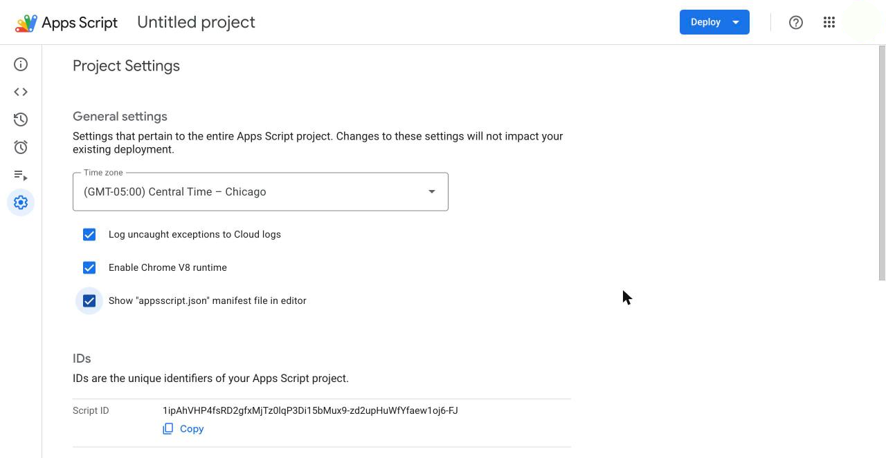
Further down the same page. Yours lists SHEET_API_TOKEN too: leave it. If it is missing, stop and email the desk's owner.
1Script Properties: scroll down to it.
2SCRAPE_FOLDER_ID and BRIEFS_FOLDER_ID: both should be there.
3Edit script properties: only if one is missing.
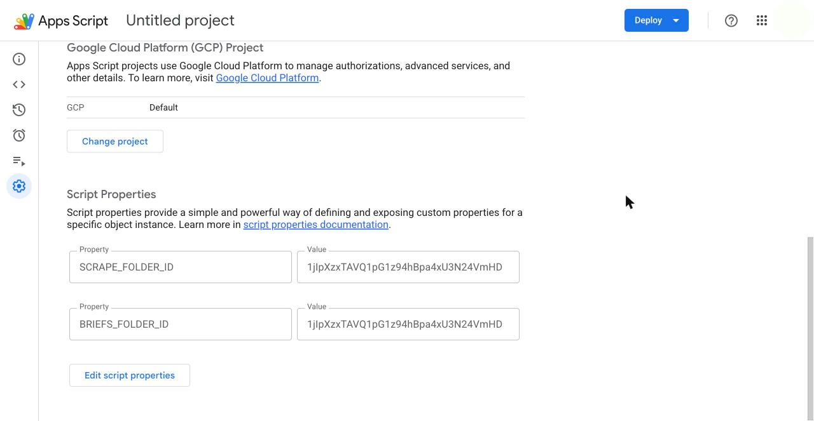
Adding a missing one. A folder's id is the last part of its address when the folder is open in Drive.
1Add script property.
2Property: the name, SCRAPE_FOLDER_ID.
3Value: the id of the folder ERC Content Desk > Newsletter > Newsletter Scrape > scrapes.
4BRIEFS_FOLDER_ID: the id of the folder ERC Content Desk > ERC Research Briefs.
5Save script properties.
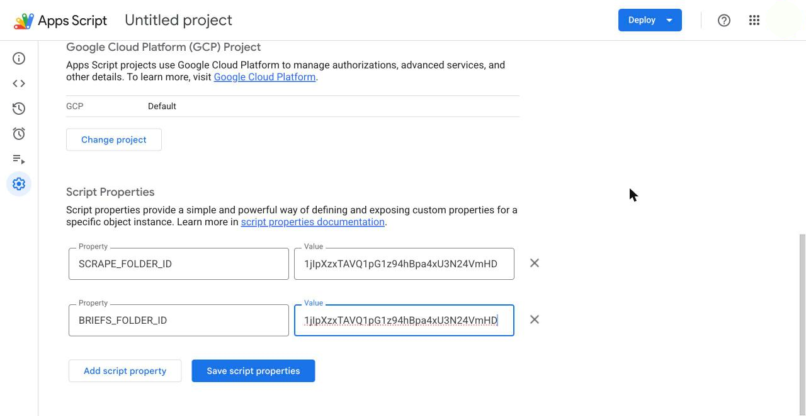
Back in the editor, the permissions file.
1Editor, the < > icon.
2appsscript.json.
3These two lines inside oauthScopes. If one is missing, add it and save (Cmd+S or Ctrl+S).
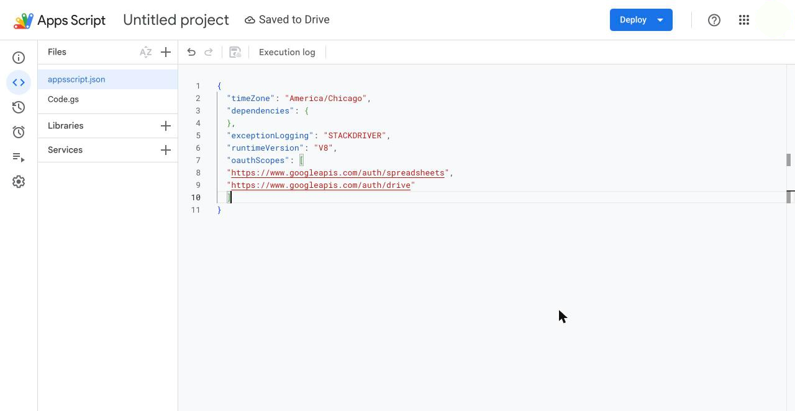
The desk script, whole.
1Copy. It takes every line.
2In the editor, paste it over the old code. Next picture.
The desk script apps-script/Code.gs · 518 lines
/**
* ERC Content Desk — Sheet API
*
* This script turns this Google Sheet into a tiny web API that the Content
* Desk app talks to instead of the Google Sheets REST API. It runs under
* your own Google account, so it works even though Google Cloud is disabled
* for this account — nothing here needs a Cloud project or a service
* account.
*
* WHAT IT DOES: reads rows, appends a row, overwrites a row, or writes the
* header row. Since October 19, 2026 it also files the scraper's spreadsheets
* into the shared drive (saveFile, below). Since October 24, 2026 it also
* reads the Scraper sources Sheet and adds one row to it for the desk's Add a
* source form (listSources, addSource). It never runs arbitrary code sent
* to it and only touches the one sheet tab it's told to; the one thing it
* ever trashes is an older copy of a scraper file being delivered again.
*
* SECURITY: when you deploy this as a web app with "Who has access: Anyone",
* Google does NOT check who's calling — anyone with the URL could call it.
* The token check below is what actually protects the data: every request
* must include the same secret value you set as the SHEET_API_TOKEN script
* property (Project Settings → Script Properties, or Extensions → Apps
* Script → gear icon). The token is deliberately not written in this file,
* because this file is not a secret — paste it wherever you like.
*
* See README.md for the exact deployment steps.
*/
/** Name of the script property holding the shared secret. Not the secret itself. */
var TOKEN_PROPERTY_NAME = 'SHEET_API_TOKEN';
/** How long to wait for the sheet lock before giving up, in milliseconds. */
var LOCK_TIMEOUT_MS = 10000;
/** Name of the script property holding the id of the shared drive folder
* the scraper's runs are filed under (Newsletter Scrape/scrapes). The id is
* the last part of the folder's address in Drive. Not the id itself. */
var SCRAPE_FOLDER_PROPERTY_NAME = 'SCRAPE_FOLDER_ID';
/** Name of the script property holding the id of the team drive folder
* ERC Content Desk/ERC Research Briefs, where each brief gets a folder of
* its own (the owner, Oct 20 and 21, 2026). The id is the last part of the
* folder's address. Not the id itself. */
var BRIEFS_FOLDER_PROPERTY_NAME = 'BRIEFS_FOLDER_ID';
/** Name of the script property holding the id of the Scraper sources Sheet
* (ERC Content Desk/Newsletter/Scraper sources on the team drive): the list
* of sources the scraper watches, where the desk's Add a source form writes
* (Oct 24, 2026). The id is the long part of the Sheet's address between
* /d/ and /edit. Not the id itself. */
var SOURCES_SHEET_PROPERTY_NAME = 'SOURCES_SHEET_ID';
var FILE_NAME_RULE = /^[A-Za-z0-9][A-Za-z0-9 _.-]{0,120}\.(xlsx|txt|pdf|md|docx|png|jpg|jpeg|csv)$/;
/** A folder inside a brief's folder, by name: the figures (Oct 22). */
var SUB_RULE = /^[a-z]{1,20}$/;
/**
* Entry point Google calls for every POST request to the deployed web app.
*/
function doPost(e) {
var response;
try {
var body = parseRequestBody(e);
var authError = checkToken(body.token);
if (authError) {
response = { ok: false, error: authError };
} else {
response = handleAction(body);
}
} catch (err) {
// Anything unexpected still comes back as readable JSON, not a stack trace.
response = { ok: false, error: 'Server error: ' + describeError(err) };
}
return jsonOutput(response);
}
/**
* A GET to the deployed URL (e.g. pasted straight into a browser) gets a
* plain, friendly message instead of a Google error page — useful for
* confirming the deployment URL is correct.
*/
function doGet() {
return ContentService
.createTextOutput('ERC Content Desk sheet API is running. It only accepts POST requests.')
.setMimeType(ContentService.MimeType.TEXT);
}
/** Parses the JSON POST body. Throws a plain-language error if it can't. */
function parseRequestBody(e) {
if (!e || !e.postData || !e.postData.contents) {
throw new Error('No request body was sent.');
}
try {
return JSON.parse(e.postData.contents);
} catch (err) {
throw new Error('Request body was not valid JSON.');
}
}
/**
* Checks the request's token against the SHEET_API_TOKEN script property.
* Returns an error message string if the request should be rejected, or
* null if it's allowed to proceed. Fails closed: if the property has never
* been set, every request is rejected.
*/
function checkToken(requestToken) {
var expected = PropertiesService.getScriptProperties().getProperty(TOKEN_PROPERTY_NAME);
if (!expected) {
return 'Server is not configured: the ' + TOKEN_PROPERTY_NAME + ' script property is not set.';
}
if (!requestToken || requestToken !== expected) {
return 'Unauthorized: missing or incorrect token.';
}
return null;
}
/** Dispatches to the right handler once the token has checked out. */
function handleAction(body) {
switch (body.action) {
case 'saveFile':
return handleSaveFile(body); // Drive, not the sheet
case 'appendScrape':
return withLock(function () { return handleAppendScrape(body); }); // the Newsletter scrapes Sheet in Drive
case 'briefFolder':
return handleBriefFolder(body); // Research briefs on the team drive
case 'listFiles':
return handleListFiles(body);
case 'getFile':
return handleGetFile(body);
case 'listSources':
return handleListSources(); // the Scraper sources Sheet, by its id
case 'addSource':
return withLock(function () { return handleAddSource(body); });
}
var sheet = getTargetSheet(body.sheetName);
switch (body.action) {
case 'read':
return handleRead(sheet);
case 'append':
return withLock(function () { return handleAppend(sheet, body.values); });
case 'update':
return withLock(function () { return handleUpdate(sheet, body.rowNumber, body.values); });
case 'header':
return withLock(function () { return handleHeader(sheet, body.values); });
default:
return { ok: false, error: 'Unknown action: ' + body.action };
}
}
/** Finds the sheet tab to operate on: the named tab, or the first tab if none was given. */
function getTargetSheet(sheetName) {
var spreadsheet = SpreadsheetApp.getActiveSpreadsheet();
if (sheetName) {
var named = spreadsheet.getSheetByName(sheetName);
if (!named) throw new Error('No sheet tab named "' + sheetName + '".');
return named;
}
return spreadsheet.getSheets()[0];
}
/**
* Runs fn() while holding the script lock, so two requests can't write at
* the same time. Returns a clear error instead of throwing if the lock
* can't be acquired within LOCK_TIMEOUT_MS.
*/
function withLock(fn) {
var lock = LockService.getScriptLock();
var acquired = lock.tryLock(LOCK_TIMEOUT_MS);
if (!acquired) {
return { ok: false, error: "Couldn't get a lock on the sheet — another request was in progress. Try again." };
}
try {
return fn();
} finally {
lock.releaseLock();
}
}
/**
* Reads every data row (everything below row 1, the header) and returns it
* along with each row's real sheet row number, so the caller can write back
* to the right place later.
*/
function handleRead(sheet) {
var lastRow = sheet.getLastRow();
var lastColumn = sheet.getLastColumn();
if (lastRow < 2 || lastColumn < 1) {
return { ok: true, rows: [] };
}
var numDataRows = lastRow - 1;
// getDisplayValues, not getValues: getValues returns Google's typed values,
// so a date cell comes back as a Date object and would stringify to
// "Mon Jul 28 2026 00:00:00 GMT-0500 (...)" instead of "2026-07-28",
// corrupting the date column and the public hub CSV built from it.
// Display values give us exactly what the sheet shows, as text — which is
// also what the app writes back, so a round trip changes nothing.
var values = sheet.getRange(2, 1, numDataRows, lastColumn).getDisplayValues();
var rows = values.map(function (rowValues, i) {
return { rowNumber: i + 2, values: rowValues };
});
return { ok: true, rows: rows };
}
/** Appends one new row after the last row with content. */
function handleAppend(sheet, values) {
if (!Array.isArray(values)) {
return { ok: false, error: 'append needs a "values" array.' };
}
sheet.appendRow(values);
return { ok: true };
}
/** Overwrites an existing row (by its 1-based sheet row number) with new values. */
function handleUpdate(sheet, rowNumber, values) {
if (!Array.isArray(values)) {
return { ok: false, error: 'update needs a "values" array.' };
}
if (!rowNumber || rowNumber < 2) {
return { ok: false, error: 'update needs a valid "rowNumber" (2 or greater — row 1 is the header).' };
}
sheet.getRange(rowNumber, 1, 1, values.length).setValues([values]);
return { ok: true };
}
/** Writes the header row (row 1). */
function handleHeader(sheet, values) {
if (!Array.isArray(values)) {
return { ok: false, error: 'header needs a "values" array.' };
}
sheet.getRange(1, 1, 1, values.length).setValues([values]);
return { ok: true };
}
/**
* Files one of the scraper's spreadsheets, or its run log, into the shared
* drive: Newsletter Scrape/scrapes/<folder>/<name>, where <folder> is the
* run's date. The desk sends the file as base64 (the owner, Oct 19, 2026: the
* haul in Drive "so it's available to everyone"). A delivery of the same
* file on the same day replaces the earlier copy, which goes to the trash
* for 30 days.
*/
function handleSaveFile(body) {
var folderId = PropertiesService.getScriptProperties().getProperty(SCRAPE_FOLDER_PROPERTY_NAME);
if (!folderId && !body.folderId) {
return { ok: false, error: 'Server is not configured: the ' + SCRAPE_FOLDER_PROPERTY_NAME + ' script property is not set.' };
}
if (!body.name || !FILE_NAME_RULE.test(body.name)) {
return { ok: false, error: 'saveFile needs a plain file "name" ending in .xlsx, .txt, .pdf, .md, .docx, .png, .jpg or .csv.' };
}
if (!body.b64) {
return { ok: false, error: 'saveFile needs the file as "b64".' };
}
var folder;
if (body.folderId) {
// A brief's own folder (briefFolder gave its id), or a folder inside it by name (its figures).
folder = DriveApp.getFolderById(String(body.folderId));
if (body.sub) {
if (!SUB_RULE.test(body.sub)) return { ok: false, error: 'saveFile needs a plain "sub": lowercase letters only.' };
var inside = folder.getFoldersByName(body.sub);
folder = inside.hasNext() ? inside.next() : folder.createFolder(body.sub);
}
} else {
if (!body.folder || !/^\d{4}-\d{2}-\d{2}$/.test(body.folder)) {
return { ok: false, error: 'saveFile needs a "folder" named by date, YYYY-MM-DD, or a "folderId".' };
}
var root = DriveApp.getFolderById(folderId);
var subs = root.getFoldersByName(body.folder);
folder = subs.hasNext() ? subs.next() : root.createFolder(body.folder);
}
var bytes = Utilities.base64Decode(body.b64);
var blob = Utilities.newBlob(bytes, body.contentType || 'application/octet-stream', body.name);
var older = folder.getFilesByName(body.name);
while (older.hasNext()) older.next().setTrashed(true);
var file = folder.createFile(blob);
return { ok: true, url: file.getUrl(), folderUrl: folder.getUrl() };
}
/** The spreadsheet the scrape by issue is kept in, inside the scrapes folder. */
var SCRAPES_SHEET_NAME = 'Newsletter scrapes';
var MONTHS = ['Jan', 'Feb', 'Mar', 'Apr', 'May', 'Jun', 'Jul', 'Aug', 'Sep', 'Oct', 'Nov', 'Dec'];
/** "2026-10-27" as a tab name, "Oct 27, 2026"; a run with no issue is "Run 2026-10-19". */
function scrapeTabName(issue, run) {
var m = /^(\d{4})-(\d{2})-(\d{2})$/.exec(issue || '');
if (!m) return 'Run ' + run;
return MONTHS[Number(m[2]) - 1] + ' ' + Number(m[3]) + ', ' + m[1];
}
/** Finds the Newsletter scrapes Sheet in the scrapes folder, or makes it there. */
function scrapesSpreadsheet(folder) {
var files = folder.getFilesByType(MimeType.GOOGLE_SHEETS);
while (files.hasNext()) {
var file = files.next();
if (file.getName() === SCRAPES_SHEET_NAME) return SpreadsheetApp.openById(file.getId());
}
var made = SpreadsheetApp.create(SCRAPES_SHEET_NAME);
DriveApp.getFileById(made.getId()).moveTo(folder);
return made;
}
/**
* Puts a run's rows on the tab of the issue they feed (the owner, Oct 19, 2026:
* "a new sheet based on the scrape, by the newsletter send out dates"; her
* pick: one Sheet, a tab per issue). The tab is made on first use with the
* header frozen; the newest issue's tab sits first. A link already on the
* tab is never written twice, and the script never removes a row, so what
* the team deletes by hand stays deleted and a second run the same day
* only adds what is new (the owner, Oct 20). Links are clickable.
*/
function handleAppendScrape(body) {
var folderId = PropertiesService.getScriptProperties().getProperty(SCRAPE_FOLDER_PROPERTY_NAME);
if (!folderId) {
return { ok: false, error: 'Server is not configured: the ' + SCRAPE_FOLDER_PROPERTY_NAME + ' script property is not set.' };
}
if (!body.run || !/^\d{4}-\d{2}-\d{2}$/.test(body.run)) {
return { ok: false, error: 'appendScrape needs the "run" date, YYYY-MM-DD.' };
}
if (!Array.isArray(body.header) || !Array.isArray(body.rows)) {
return { ok: false, error: 'appendScrape needs a "header" array and a "rows" array.' };
}
var ss = scrapesSpreadsheet(DriveApp.getFolderById(folderId));
var name = scrapeTabName(body.issue, body.run);
var sheet = ss.getSheetByName(name);
var width = body.header.length;
if (!sheet) {
sheet = ss.insertSheet(name, 0);
var leftover = ss.getSheetByName('Sheet1');
if (leftover && ss.getSheets().length > 1 && leftover.getLastRow() === 0) ss.deleteSheet(leftover);
}
if (sheet.getLastRow() === 0) {
sheet.getRange(1, 1, 1, width).setValues([body.header]).setFontWeight('bold');
sheet.setFrozenRows(1);
}
// Only links not already on the tab are written; nothing on the tab is ever removed here.
var linkCol = body.header.indexOf('Link') + 1;
var onTab = {};
var last = sheet.getLastRow();
if (linkCol > 0 && last > 1) {
sheet.getRange(2, linkCol, last - 1, 1).getValues().forEach(function (cell) {
if (cell[0]) onTab[String(cell[0]).trim()] = true;
});
}
var fresh = body.rows.filter(function (row) {
var link = linkCol > 0 ? String(row[linkCol - 1] || '').trim() : '';
return !link || !onTab[link];
});
if (fresh.length) {
var start = sheet.getLastRow() + 1;
var values = fresh.map(function (row) {
var out = [];
for (var i = 0; i < width; i++) out.push(row[i] == null ? '' : row[i]);
return out;
});
sheet.getRange(start, 1, values.length, width).setValues(values);
if (linkCol > 0) {
var formulas = values.map(function (row) {
var url = String(row[linkCol - 1] || '');
return [url ? '=HYPERLINK("' + url.replace(/"/g, '""') + '","' + url.replace(/"/g, '""') + '")' : ''];
});
sheet.getRange(start, linkCol, values.length, 1).setFormulas(formulas);
}
}
ss.setActiveSheet(sheet);
ss.moveActiveSheet(1);
return { ok: true, sheetUrl: ss.getUrl() + '#gid=' + sheet.getSheetId(), tab: name, added: fresh.length, skipped: body.rows.length - fresh.length };
}
/**
* A brief's own folder under ERC Content Desk/ERC Research Briefs on the team
* drive (the owner, Oct 20 and 21, 2026): lastname-year-topic, made on first use, found after. The desk files
* the paper, her notes, the drafts and the Word doc into it by its id.
*/
function handleBriefFolder(body) {
var rootId = PropertiesService.getScriptProperties().getProperty(BRIEFS_FOLDER_PROPERTY_NAME);
if (!rootId) {
return { ok: false, error: 'Server is not configured: the ' + BRIEFS_FOLDER_PROPERTY_NAME + ' script property is not set.' };
}
if (!body.name || !/^[a-z0-9][a-z0-9-]{0,80}$/.test(body.name)) {
return { ok: false, error: 'briefFolder needs a plain "name": letters, digits and dashes.' };
}
var root = DriveApp.getFolderById(rootId);
var subs = root.getFoldersByName(body.name);
var folder = subs.hasNext() ? subs.next() : root.createFolder(body.name);
return { ok: true, id: folder.getId(), url: folder.getUrl() };
}
/** What a folder holds, newest first: name, the day it last changed, its address, its size. */
function handleListFiles(body) {
if (!body.folderId) return { ok: false, error: 'listFiles needs a "folderId".' };
var root = DriveApp.getFolderById(String(body.folderId));
var out = [];
var add = function (files, prefix) {
while (files.hasNext()) {
var f = files.next();
out.push({ name: prefix + f.getName(), updated: f.getLastUpdated().toISOString().slice(0, 10), url: f.getUrl(), size: f.getSize() });
}
};
add(root.getFiles(), '');
// The folders inside (a brief's figures), one level down, named before each file.
var subs = root.getFolders();
while (subs.hasNext()) {
var sub = subs.next();
add(sub.getFiles(), sub.getName() + '/');
}
out.sort(function (a, b) { return a.updated < b.updated ? 1 : a.updated > b.updated ? -1 : a.name.localeCompare(b.name); });
return { ok: true, files: out };
}
/** One file's bytes, base64, by name within a folder (the paper, for drafting). */
function handleGetFile(body) {
if (!body.folderId || !body.name) return { ok: false, error: 'getFile needs a "folderId" and a "name".' };
var folder = DriveApp.getFolderById(String(body.folderId));
var files = null;
if (body.sub && SUB_RULE.test(body.sub)) {
// A brief's figures: the folder inside first, then the brief's folder, where a cut filed before the figures folder sits.
var inside = folder.getFoldersByName(body.sub);
if (inside.hasNext()) files = inside.next().getFilesByName(String(body.name));
}
if (!files || !files.hasNext()) files = folder.getFilesByName(String(body.name));
if (!files.hasNext()) return { ok: false, error: 'No file named ' + body.name + ' in that folder.' };
var blob = files.next().getBlob();
return { ok: true, name: blob.getName(), contentType: blob.getContentType(), b64: Utilities.base64Encode(blob.getBytes()) };
}
/** The Scraper sources Sheet's columns (Oct 22, 2026), for a Sheet with no header yet. */
var SOURCES_HEADER = ['Source', 'Type', 'Subtype', 'Address', 'How it is read', 'Switched on', 'Why off'];
var MAX_SOURCE_ROWS = 500;
var MAX_SOURCE_CELL = 500;
var SOURCES_NOT_SET = 'Server is not configured: the ' + SOURCES_SHEET_PROPERTY_NAME + ' script property is not set.';
/** The Scraper sources Sheet's first tab, or null while its id is not set. */
function sourcesSheet() {
var id = PropertiesService.getScriptProperties().getProperty(SOURCES_SHEET_PROPERTY_NAME);
return id ? SpreadsheetApp.openById(id).getSheets()[0] : null;
}
/** Row 1 as the Sheet shows it. */
function sourcesHeaderOf(sheet) {
if (sheet.getLastRow() < 1 || sheet.getLastColumn() < 1) return [];
return sheet.getRange(1, 1, 1, sheet.getLastColumn()).getDisplayValues()[0].map(function (h) { return String(h).trim(); });
}
/** One address however it was typed (the desk's addressKey): scheme, www, a fragment and trailing slashes aside. */
function sourceKey(address) {
return String(address || '').trim().toLowerCase().replace(/#.*$/, '').replace(/^https?:\/\//, '').replace(/^www\./, '').replace(/\/+$/, '');
}
/** A cell written as plain text: a value that would start a formula keeps a leading apostrophe. */
function plainCell(value) {
var text = String(value == null ? '' : value).slice(0, MAX_SOURCE_CELL);
return /^[=+\-@]/.test(text) ? "'" + text : text;
}
/** The Scraper sources Sheet: its header and every row, as shown (Oct 24, 2026). */
function handleListSources() {
var sheet = sourcesSheet();
if (!sheet) return { ok: false, error: SOURCES_NOT_SET };
var header = sourcesHeaderOf(sheet);
var last = sheet.getLastRow();
if (last < 2 || !header.length) return { ok: true, header: header, rows: [] };
return { ok: true, header: header, rows: sheet.getRange(2, 1, last - 1, header.length).getDisplayValues() };
}
/**
* Adds one source from the desk's Add a source form (Oct 24, 2026), by column
* name under the Sheet's own header, every cell as plain text. An address
* already on the Sheet is not written twice: the answer names that row's
* source. Nothing on the Sheet is ever changed or removed here; switching a
* source off is done by hand, in its Switched on cell.
*/
function handleAddSource(body) {
var sheet = sourcesSheet();
if (!sheet) return { ok: false, error: SOURCES_NOT_SET };
var source = body.source;
if (!source || typeof source !== 'object') return { ok: false, error: 'addSource needs a "source".' };
if (!String(source.Source || '').trim() || !/^https?:\/\/\S+$/i.test(String(source.Address || ''))) {
return { ok: false, error: 'addSource needs a "Source" name and an http(s) "Address".' };
}
var header = sourcesHeaderOf(sheet);
if (!header.some(function (h) { return h; })) {
sheet.getRange(1, 1, 1, SOURCES_HEADER.length).setValues([SOURCES_HEADER]).setFontWeight('bold');
sheet.setFrozenRows(1);
header = SOURCES_HEADER.slice();
}
var lower = header.map(function (h) { return h.toLowerCase(); });
var addressCol = lower.indexOf('address');
var nameCol = lower.indexOf('source');
if (addressCol < 0) return { ok: false, error: 'The sources sheet has no Address column.' };
var last = sheet.getLastRow();
if (last - 1 >= MAX_SOURCE_ROWS) return { ok: false, error: 'The sources sheet is full.' };
if (last > 1) {
var want = sourceKey(source.Address);
var rows = sheet.getRange(2, 1, last - 1, header.length).getDisplayValues();
for (var i = 0; i < rows.length; i++) {
if (sourceKey(rows[i][addressCol]) === want) return { ok: true, added: false, duplicate: nameCol >= 0 ? rows[i][nameCol] : '' };
}
}
var row = lower.map(function (h) {
for (var j = 0; j < SOURCES_HEADER.length; j++) {
if (SOURCES_HEADER[j].toLowerCase() === h) return plainCell(source[SOURCES_HEADER[j]]);
}
return '';
});
sheet.appendRow(row);
return { ok: true, added: true };
}
/** Wraps a JS object as the JSON response Apps Script sends back. */
function jsonOutput(obj) {
return ContentService
.createTextOutput(JSON.stringify(obj))
.setMimeType(ContentService.MimeType.JSON);
}
/** Best-effort human-readable message from a thrown error of unknown shape. */
function describeError(err) {
return (err && err.message) ? err.message : String(err);
}
It starts with /** and ends with }. 518 lines.
This code is a copy from the desk's repository on Oct 26, 2026. If the code changes, this box is what gets updated.
The script pasted over the old code, and saved.
1Code.gs.
2Click in the code, select all (Cmd+A or Ctrl+A) and paste.
3Save, the disk icon. The top then says Saved to Drive.
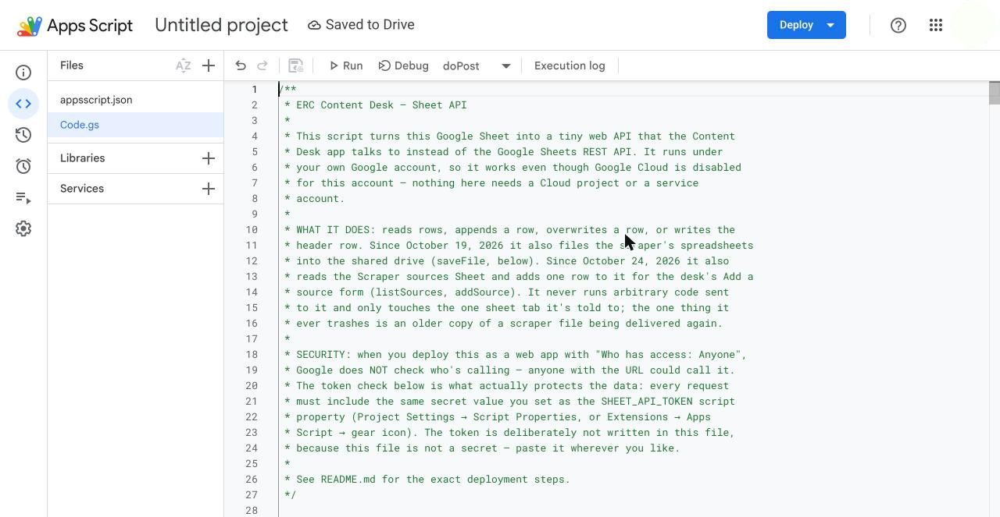
A small helper, run once, so Google asks for every permission the script needs.
1Copy.
2Click at the very end of Code.gs, after the last line, and paste. Save.
The checkAccess helper
function checkAccess() {
var props = PropertiesService.getScriptProperties();
Logger.log(SpreadsheetApp.getActiveSpreadsheet().getName());
Logger.log(DriveApp.getFolderById(props.getProperty('SCRAPE_FOLDER_ID')).getName());
Logger.log(DriveApp.getFolderById(props.getProperty('BRIEFS_FOLDER_ID')).getName());
}
It starts with function checkAccess() { and ends with }.
The end of Code.gs with the helper in place.
1The helper, after the last line.
2Save.
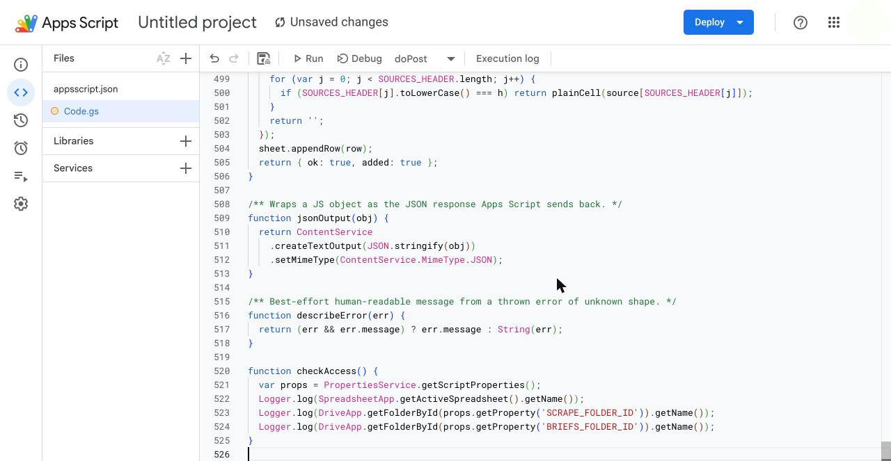
Run the helper.
1The function menu, after Debug.
2checkAccess, last in the list.
With checkAccess picked.
1Run.
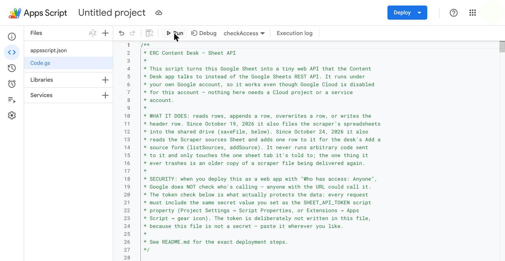
Google asks before the first run.
1Review permissions.
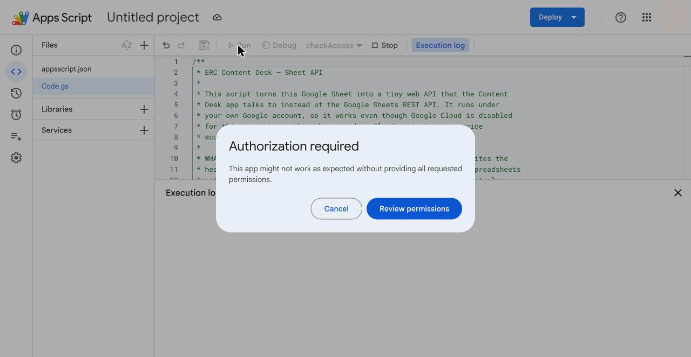
Google's permission window opens in its own tab.
Allow it
Pick your TAMU account.
If Google says it has not verified this app: Advanced, then Go to Untitled project (unsafe). Yours says the project's name.
Tick every box, or Select all.
Continue.
The Execution log opens under the code.
1Execution completed. Above it, the Sheet's name and the two folders' names.
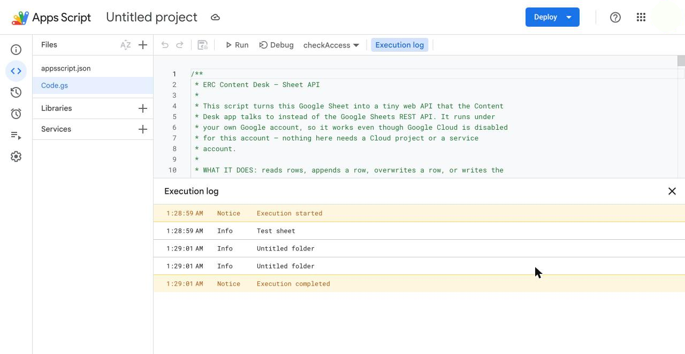
A new deployment. The old ones belong to the closed account.
1Deploy.
2New deployment.
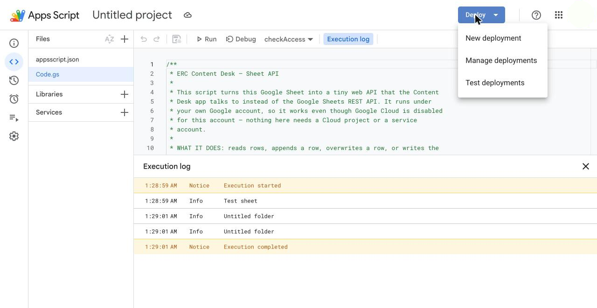
The New deployment box.
1The gear beside Select type.
2Web app.
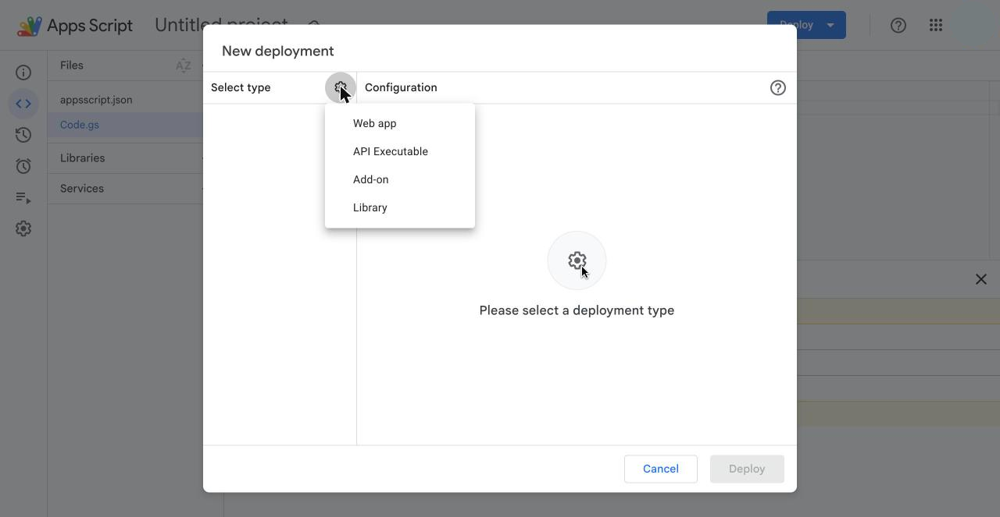
The web app's settings.
1Description: your name and the date.
2Execute as: Me.
3Who has access: open it and pick Anyone, the last one. Not Anyone with Google account.
4Deploy.
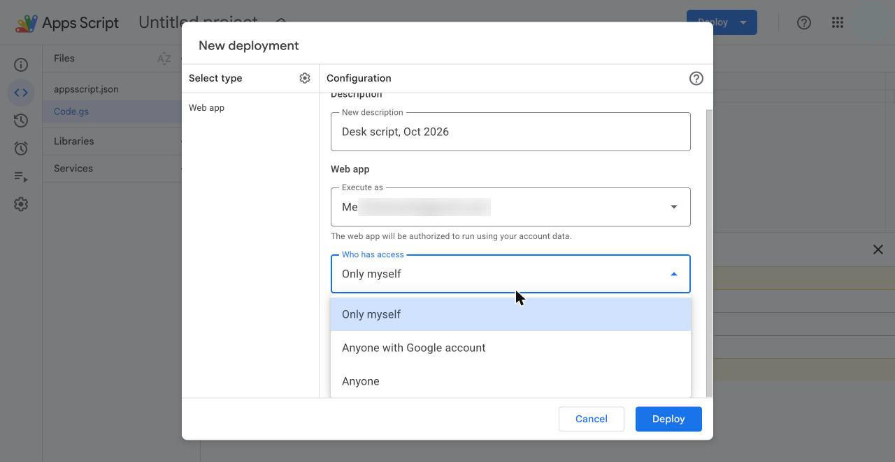
The address. Keep it private: it goes to the desk's owner by email and nowhere else.
1Copy, under Web app URL: this is the address to email.
2Done.
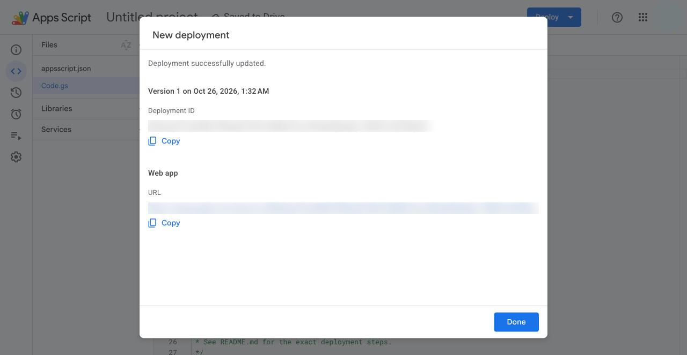
2Step 2: Script 2: the sign-up
The same screens as script 1, with these differences.
What differs
The Sheet is subscribe to listserve.
A new Untitled project may open. That is fine.
No settings and no properties: the Sheet's id is in the code.
A project that already holds doPost and waitingCount is the old script: carry on in it. Otherwise:
1A new Untitled project is fine. Click the name and call it Listserv sign-up.
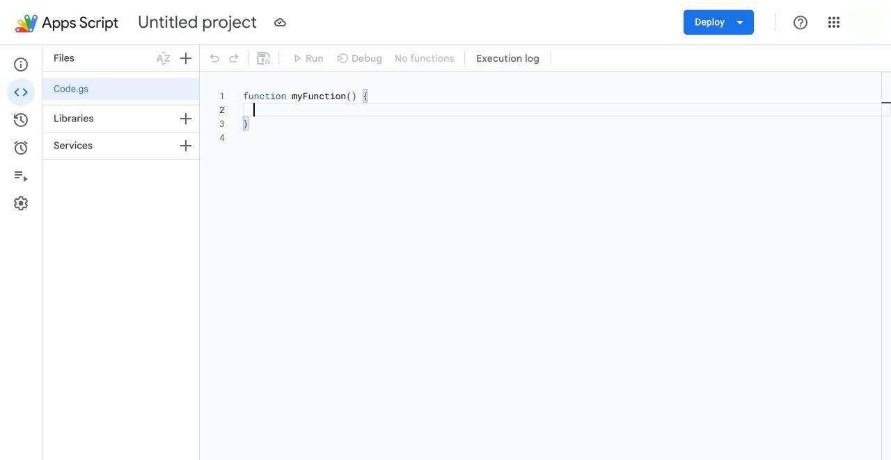
The sign-up script, whole.
1Copy.
2In the editor, paste it over the old code. Next picture.
The sign-up script apps-script/listserv-count.gs · 50 lines
/**
* The sign-up sheet's Apps Script, whole (Oct 8, 2026): the owner's doPost as it
* was, which appends each sign-up to the first tab (Sheet 1), plus doGet,
* which answers ?action=count with Sheet 1's rows for the desk's Listserv
* hub: { ok: true, waiting: N }, N being the rows below the header with
* something in column A. Never a name or an address.
*
* This is the SIGN-UP sheet's script, the one LISTSERV_URL posts to, not the
* desk's own Code.gs. To change it: open the script, select all, paste this
* file, save, then Deploy, Manage deployments, the pencil, Version: New
* version, Deploy. Saving alone changes nothing live. The URL stays the same.
*/
var SHEET_ID = '1U_kFmkji6tPeD6OzRVcOWkaWz46pcQcogD1nYtObO2E';
function doPost(e) {
var data = JSON.parse(e.postData.contents);
if (data.action === 'listserv_signup') {
var sheet = SpreadsheetApp.openById(SHEET_ID).getSheets()[0];
sheet.appendRow([data.name, data.email, data.date_subscribed, data.time]);
}
return ContentService
.createTextOutput(JSON.stringify({ status: 'ok' }))
.setMimeType(ContentService.MimeType.JSON);
}
function doGet(e) {
if (e && e.parameter && e.parameter.action === 'count') {
return ContentService
.createTextOutput(JSON.stringify({ ok: true, waiting: waitingCount() }))
.setMimeType(ContentService.MimeType.JSON);
}
return ContentService
.createTextOutput('The sign-up script is running.')
.setMimeType(ContentService.MimeType.TEXT);
}
/** Rows on the first tab (Sheet 1) with something in column A, the header left out. */
function waitingCount() {
var sheet = SpreadsheetApp.openById(SHEET_ID).getSheets()[0];
var last = sheet.getLastRow();
if (last < 2) return 0;
var values = sheet.getRange(2, 1, last - 1, 1).getValues();
var n = 0;
for (var i = 0; i < values.length; i++) {
if (String(values[i][0]).trim()) n++;
}
return n;
}
It starts with /** and ends with }. 50 lines.
This code is a copy from the desk's repository on Oct 26, 2026. If the code changes, this box is what gets updated.
Pasted and saved, as for script 1.
1Code.gs.
2Click in the code, select all (Cmd+A or Ctrl+A) and paste.
3Save, the disk icon. The top then says Saved to Drive.
Run waitingCount once. It reads Sheet 1, so Google asks for permission.
1The function menu, after Debug.
2waitingCount. The picture shows script 1's list.
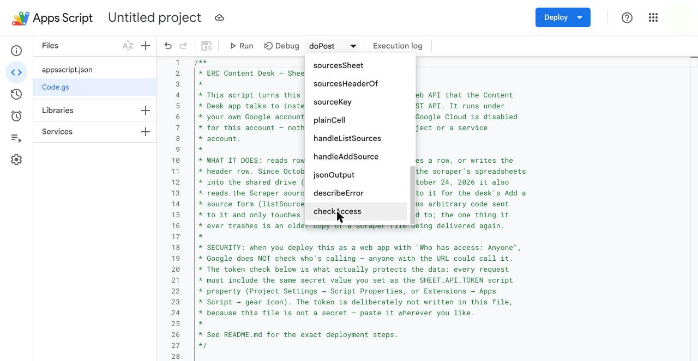
Run. The picture shows script 1's checkAccess; yours says waitingCount.
1Run.
Then allow it as for script 1: your account, every box, Continue. The log ends with Execution completed.
1Review permissions.
Deploy it the same way.
1Deploy.
2New deployment.
A web app again.
1The gear beside Select type.
2Web app.
The same settings. Who has access: Anyone, since the desk sends sign-ups without signing in.
1Description: your name and the date.
2Execute as: Me.
3Who has access: open it and pick Anyone, the last one. Not Anyone with Google account.
4Deploy.
The second address. Copy it, then Done.
1Copy, under Web app URL: this is the address to email.
2Done.
3Step 3: Send the two addresses
The desk reaches the scripts through two settings only the owner can change.
!Email only. Never a shared doc, a chat or a page: the sign-up address alone lets anyone add rows.
You
Each address in a private (Incognito) window first. The desk script reads "ERC Content Desk sheet API is running. It only accepts POST requests." and the sign-up script "The sign-up script is running." A Google sign-in page means Who has access is not Anyone.
Say which is which: "erc-content-desk script" and "subscribe to listserve script".
The owner, once
On vercel.com, team TAMU-ERC, project erc-content-desk: Settings > Environment Variables. SHEET_API_URL gets the desk script's address, LISTSERV_URL the sign-up script's. SHEET_API_TOKEN stays.
Deployments > the newest Production deployment > Redeploy. Listserv then turns from Down to Live by itself.
A later change to a script is a new version of your own deployment: the address stays, and Vercel stays as it is.
4Step 4: Check it worked
Once the owner says the redeploy is done, open Listserv.
1To be added: a number means the sign-up script answered.
2If the script is down this reads: Sheet 1 couldn't be counted just now.
3Status: Live means the script answered. Down means sign-ups fail.
One test of each script. Delete the test rows after.
Two tests
On erc-share.vercel.app/listserv, sign up as "Test, delete me" with your own email. The page says "Thank you. You are on the list."
Delete that row, the last on Sheet 1 of subscribe to listserve. Listserv's Last sign-up then shows today: expected.
On Submit content, add "Test item, delete me" with the link https://example.org/test and your initials. Within a minute it is the last row on the first tab of erc-content-desk.
Delete it on Content Sort (the team password: Who to ask). Its Sheet row stays, marked trashed.
The scraper, the briefs and the send dates use the desk script too.
The rest
Content queue > Run the scraper. Under two minutes later the line reads "Last run ..." with Open the sheet. "The last run failed on GitHub." means not yet.
Any brief on Research briefs (the team password: Who to ask) lists its files. "Drive didn't answer." means not yet.
When a check fails, the message says which side it is.
Where to look
In the editor, Executions lists each call. A failed sign-up call shows as Failed: click it to read why. The desk script answers its errors in words, so its calls show Completed even when they refuse.
A Google sign-in page in the private window
Who has access is not Anyone. Deploy > Manage deployments > your deployment > the pencil > Who has access: Anyone > Deploy. The address stays.
No Anyone under Who has access at all: a TAMU setting. Stop and tell the owner; an option limited to Texas A&M or to Google accounts will not work, because the desk never signs in.
"Unauthorized: missing or incorrect token."
The token property changed. Do not guess a value. Email the owner.
Three more messages.
"Server is not configured: the ... script property is not set."
Add it as in script 1's Script Properties. For SHEET_API_TOKEN, email the owner.
"The Sheet's script does not know this action yet." or "Unknown action"
Old code is live. Paste the desk script from this page again, save, then a new version: next picture.
The private window works but the desk still fails
The Vercel step is missing or not redeployed. In the desk's log, "Sheet API returned HTTP 403" means the desk still calls an old address.
Saving changes nothing live: the web app runs the code as it was deployed. To send a change to the same address, Deploy > Manage deployments, then:
1The pencil.
2Version: New version.
3Deploy. The address stays.
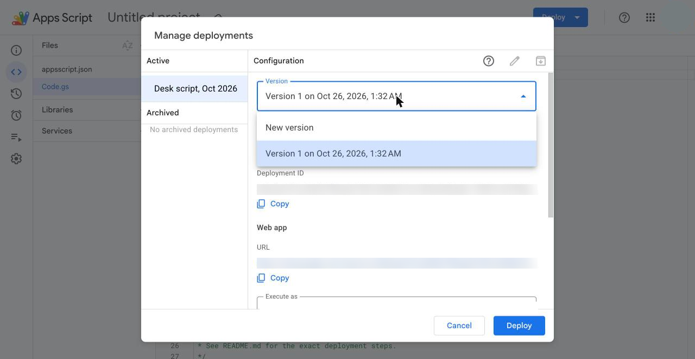
A red line in the Execution log when checkAccess runs.
1Invalid argument: id: a folder id property is missing or wrong (script 1, Script Properties).
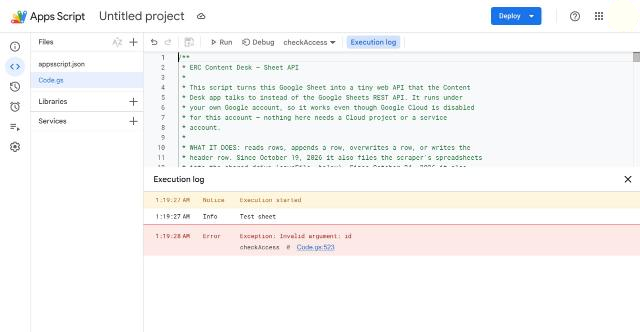
The traps, one line each.
Google asked for no permission
Permission is asked only when a function that needs it runs. Run checkAccess or waitingCount, never doGet or doPost.
A permission error naming Drive or Sheets
Google's granular consent: an empty box is a partial grant. Remove the script's access at myaccount.google.com/u/N/permissions, run checkAccess again and tick every box.
The account number in Google's addresses: N above is the number in the editor's address, such as script.google.com/u/1/. A window signed in to TAMU only has none of this.
A change does nothing, or the address changed
A new deployment gets a new address; a new version keeps it. This once a new deployment was needed. Every later change is a new version of your own deployment.
Several deployments, all looking alike: pick the one with your description.
The rest of the traps.
The editor opens the wrong project, or as the wrong account
The wrong project: always open a script from its Sheet, Extensions > Apps Script, and check the name at the top.
Several accounts in one browser: use a window signed in to TAMU only.
Other
Two old helpers, checkDrive and restoreMorningScrape: the paste removes them, which is fine. Never run restoreMorningScrape.
The test address: Test deployments ends in /dev, for editors only. The desk needs /exec.
The scripts now run as you. If your account closes, whoever follows does these steps again.
Later: Add a source
Add a source, the Content queue's form, is in the desk script already. It needs one more script property; until then the form says "The sources sheet is not connected yet."
Connect the sources Sheet
Open the Sheet Scraper sources (team drive: Education Research Center > ERC Content Desk > Newsletter). Its id is the part of its address between /d/ and /edit.
In the desk's script: Project Settings > Edit script properties > Add script property: SOURCES_SHEET_ID and that id. Save script properties. No new version needed.
Any later change to the code
Replace Code.gs with the box on this page, save, and paste the checkAccess helper at the end again. Run it, and tick every box if Google asks.
Deploy > Manage deployments > your deployment > the pencil > Version: New version > Deploy. Same address. Vercel needs nothing.